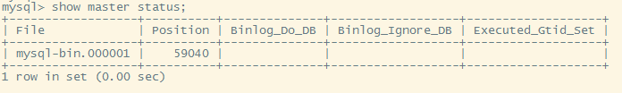

在实际的开发环境（我的为Ubuntu）中，为了保证数据的有效性以及稳定性，需要对数据库进行冗余设计，也就是集群部署，以此来应对在实际的生产环境中出现的数据库宕机，我这里主要是看了两种mysql集群设计方案，Replication和PXC（percona-xtradb-cluster）。
Replication方案，配置比较简单，采用主从的方式，内部机理为二进制日志进行同步，但不具备强一致性，从节点不可以作为读写节点，得不到实际保障，多用于数据备份的环境。
PXC任意一个节点都可以存在读写的方案，也就是任意一个节点都可以当读或者当写。同步复制。保证强一致性。同步复制，事务在所有节点要提交都提交。要么都不提交。
Replication 安装mysql 1 # apt-get install mysql-server -y
master 编辑和修改MySql Server的配置文件 1 # vim /etc/mysql/mysql.conf.d/mysqld.cnf
1 2 # 注释这句， server可以用其他网卡IP进行访问 # bind-address = 127.0.0.1
在文件末尾添加以下行。
1 2 3 4 5 server-id = 1 # 不与其他地方相同 log_bin = /var/log/mysql/mysql-bin.log log_bin_index =/var/log/mysql/mysql-bin.log.index relay_log = /var/log/mysql/mysql-relay-bin relay_log_index = /var/log/mysql/mysql-relay-bin.index
重启mysql 登录mysql，创建用于集群的账号 1 2 3 mysql > create user 'replica'@'%' identified by 'password'; mysql > GRANT REPLICATION SLAVE ON *.* TO 'replica'@'%'; mysql > FLUSH PRIVILEGES;
执行命令查看服务器状态
1 mysql > show master status;
图中是我后来截的图，参数和你不一致很正常

Slave 编辑和修改MySql Server的配置文件 1 # vim /etc/mysql/mysql.conf.d/mysqld.cnf
1 2 # 注释这句， server可以用其他网卡IP进行访问 # bind-address = 127.0.0.1
在文件末尾添加以下行。
1 2 3 4 5 server-id = 2 // 节点这里需要不同 log_bin = /var/log/mysql/mysql-bin.log log_bin_index =/var/log/mysql/mysql-bin.log.index relay_log = /var/log/mysql/mysql-relay-bin relay_log_index = /var/log/mysql/mysql-relay-bin.index
重启mysql 登录mysql，配置从节点 1 2 3 mysql > stop slave; mysql > CHANGE MASTER TO MASTER_HOST = 'master-ip', MASTER_USER = 'replica', MASTER_PASSWORD = 'password', MASTER_LOG_FILE = 'mysql-bin.000001', MASTER_LOG_POS = 753; mysql > start slave;
1 2 3 4 5 MASTER_HOST：主服务器的IP地址 MASTER_USER：我们在之前步骤中创建的主服务器的复制用户。 MASTER_PASSWORD：我们在之前步骤中创建的主服务器的复制用户密码。 MASTER_LOG_FILE：主服务器主日志文件的值。 MASTER_LOG_POS：主服务器的主日志位置的值。
主从节点的配置都完成，此时即可插入一些数据去查看是否配置成功了。
PXC 这里推荐一个YouTube的视频进行观看，Install Percona XtraDB Cluster on CentOS 7 in simple easy steps 。
可以查看GitHub视频主的仓库，here 。
可以参考官方文档 。
这里简略说一下Ubuntu PXC的安装。
以前装过mysql需要卸载干净，然后将apparmor也一并卸载。
1 $ sudo apt-get remove apparmor
获取仓库包：
1 $ wget https://repo.percona.com/apt/percona-release_latest.generic_all.deb
dpkg安装最新的仓库，更新。
1 2 3 $ sudo dpkg -i percona-release_latest.generic_all.deb $ sudo apt-get update $ sudo apt-get install percona-xtradb-cluster-5.6
以下均为转载自仓库。
Install instructions for Ubuntu 18 Assumptions
Role
machine name
IP address
Memory
Operating System
master node 1
ubuntuvm01
172.42.42.101
1G
Ubuntu 18
master node 2
ubuntuvm02
172.42.42.102
1G
Ubuntu 18
On First node Add Percona Repository 1 2 wget https://repo.percona.com/apt/percona-release_0.1-6.$(lsb_release -sc)_all.deb dpkg -i percona-release_0.1-6.$(lsb_release -sc)_all.deb
Install Percona-XtraDB-Cluster 1 2 3 apt-get update apt-get install -y percona-xtradb-cluster-57 systemctl stop mysql
Configure Replication Settings 1 2 3 4 5 6 7 8 9 10 11 12 13 14 cat >>/etc/mysql/my.cnf<<EOF [mysqld] wsrep_provider=/usr/lib/libgalera_smm.so wsrep_cluster_name=democluster wsrep_cluster_address=gcomm:// wsrep_node_name=centosvm01 wsrep_node_address=172.42.42.101 wsrep_sst_method=xtrabackup-v2 wsrep_sst_auth=repuser:reppassword pxc_strict_mode=ENFORCING binlog_format=ROW default_storage_engine=InnoDB innodb_autoinc_lock_mode=2 EOF
Bootstrap/Initialize the Cluster Create Replication User 1 2 3 mysql -uroot -p -e "create user repuser@localhost identified by 'reppassword'" mysql -uroot -p -e "grant reload, replication client, process, lock tables on *.* to repuser@localhost" mysql -uroot -p -e "flush privileges"
Update Replication configuration 1 sed -i 's/^wsrep_cluster_address=.*/wsrep_cluster_address=gcomm:\/\/172.42.42.101,172.42.42.102/' /etc/mysql/my.cnf
On Second node Add Percona Repository 1 2 wget https://repo.percona.com/apt/percona-release_0.1-6.$(lsb_release -sc)_all.deb dpkg -i percona-release_0.1-6.$(lsb_release -sc)_all.deb
Install Percona-XtraDB-Cluster 1 2 3 apt-get update apt-get install -y percona-xtradb-cluster-57 systemctl stop mysql
Configure Replication Settings 1 2 3 4 5 6 7 8 9 10 11 12 13 14 cat >>/etc/mysql/my.cnf<<EOF [mysqld] wsrep_provider=/usr/lib/libgalera_smm.so wsrep_cluster_name=democluster wsrep_cluster_address=gcomm://172.42.42.101,172.42.42.102 wsrep_node_name=centosvm02 wsrep_node_address=172.42.42.102 wsrep_sst_method=xtrabackup-v2 wsrep_sst_auth=repuser:reppassword pxc_strict_mode=ENFORCING binlog_format=ROW default_storage_engine=InnoDB innodb_autoinc_lock_mode=2 EOF
Start mysql to join the cluster 本文标题： mysql集群部署
文章作者： 小师
发布时间： 2019-05-17
最后更新： 2022-05-04
原始链接： chunlife.top/2019/05/17/mysql集群部署/
版权声明： 本站所有文章均采用知识共享署名4.0国际许可协议进行许可